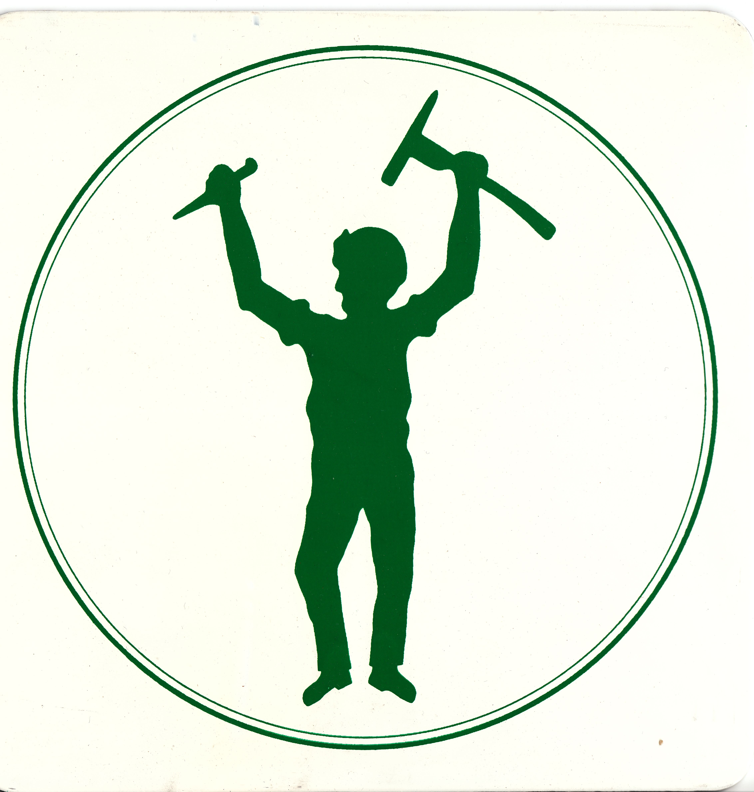

Burra National Trust notes on Johnny Green
Working copies from the Burra National Trust digital collection held locally: the mine-artefact register, the branch history of the Peacock’s Chimney campaign, and the Minespa silhouette.
These files are not otherwise online. The Johnny Green feature uses them to test Ian Auhl’s claim that the second, iron Johnny went into National Trust custody after 1967.
The artefact register does not list an iron miner
Burra Mine Artefacts, volumes 1–3, is a 2023 update of records made in May 1989 by Ray Jennison. Volume 1 opens by quoting the Burra Record of 22 May 1973 (District Council meeting of 7 May):
A letter is to be sent to Samin Ltd and to the National Trust that items in the Mine are Council property to be held by the Burra Branch of the National Trust of SA and an inventory of items is to be made for record purposes.
The same sentence appears in the local compilation National Trust History 2. The 1989 register was the inventory that followed. The 2023 update runs to 129 numbers: bedstones, kibbles, tools, boilers, pipes and related plant. It does not list an iron miner, a sheet-iron effigy, or Johnny Green. The word “green” appears only in unrelated captions (road space; green rock).
If the second Johnny was still a mine artefact in Trust care, he ought to appear in that register. He does not.
The chimney campaign does not mention making or storing a Johnny
National Trust History 2 is a chronological extract of newspaper reports of the Burra branch. The Peacock’s Chimney campaign is there in detail. It names Gerry O’Connor, Dudley Cockington, Murray Tiver and Ian Auhl. It does not mention making, repairing, or storing Johnny Green.
16 February 1971: the branch launched a state-wide appeal to resite old mine buildings, with first priority the chimney at Waterman’s Shaft known as Peacock’s. Officers elected that meeting included G. O’Connor, D. Cockington and I. Auhl.
29 February 1972, annual report: Samin demolished the Peacock’s Shaft complex; after discussion it agreed to bypass the stack long enough to move it. $8,002.36 had been received; volunteer labour had kept rebuilding costs to $3,688.47. Thanks to Ian Auhl for the appeal and to Messrs G. O’Connor, D. Cockington and M. Tiver for their time. The same report records the Thomas Pickett plaque at Diprose Creek. That plaque is Pickett’s memorial, not Johnny’s.
1 August 1972: a long account of dismantling the chimney, marking each course, failed brickwork at the top, and the switch to outside scaffolding so that the Governor could open the completed stack at the Copper Festival. Still no Johnny.
What the collection does hold
The same digital collection does hold a Minespa Johnny Green silhouette, and a large Peacock’s Chimney photograph set from the 1971 demolition through the 1972 rebuild, including the 2 September 1972 portrait of Cockington, O’Connor and Auhl with the new cut-out. Those images are used in the Feature.
